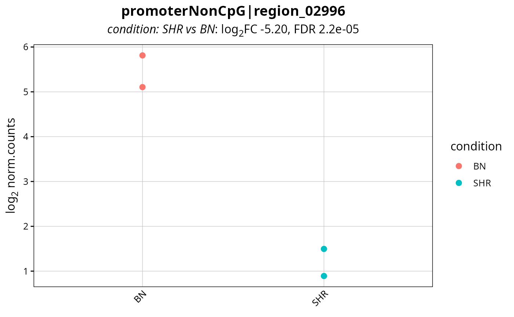
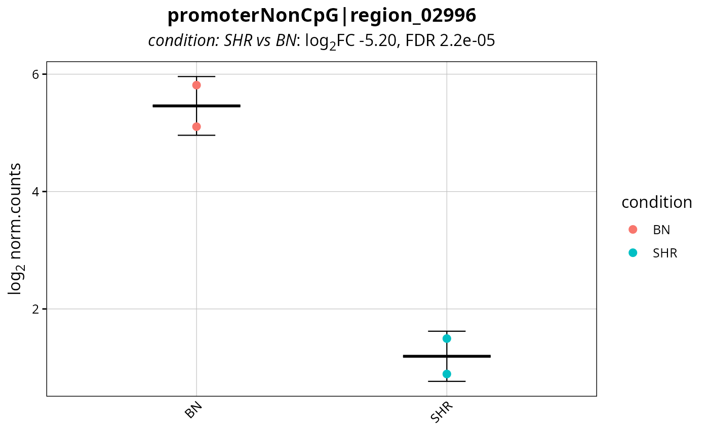

Draws the signal of a single region across the samples. On a tiled object the values are drawn along the coordinates, one line per sample, which shows whether the whole region moved or only part of it. On a non-tiled object the region carries one value per sample and those are drawn as points.
Usage
plotRegion(
object,
region,
counts = NULL,
contrast = NULL,
groupBy = NULL,
assay = NULL,
log2Scale = TRUE,
summarise = FALSE,
colours = NULL,
pointSize = 3,
rotateX = TRUE,
title = NULL,
subtitle = NULL,
legendPosition = "right",
baseSize = 12
)Arguments
- object
RegionSetDE.counts,RegionSetDE.fit,RegionSetDE.resultsorRegionSetDE.resultsListobject. A result carries both the values and the statistics, so nothing else has to be passed.- region
String identifying the region, written as
"set|id"or as the region identifier alone when it is unique across the sets. AGRangesof length one is accepted as well, in which case the overlapping rows are drawn.- counts
RegionSetDE.countsobject holding the values, whenobjectcarries none. Default:NULL.- contrast
String with the name of the contrast to annotate with, or its position, when
objectholds several of them. Default:NULL.- groupBy
String with the name of a
colDatacolumn driving the colour, e.g."condition". Default:NULL, one colour per sample.- assay
String with the name of the assay to draw. Default:
NULL, the normalised assay when present, the raw counts otherwise.- log2Scale
Logical value to indicate whether the values must be drawn on a log2 scale. Default:
TRUE.- summarise
Logical value to indicate whether the replicates of a group must be summarised rather than drawn one by one: a mean line with a ribbon along a tiled region, a mean with its spread next to the individual points on a region counted as a single row. Requires
groupBy. Default:FALSE.- colours
Named character vector with the colours. Default:
NULL.- pointSize
Numeric value with the size of the points, on a non-tiled region. Default:
3.- rotateX
Logical value to indicate whether the labels of the x axis must be angled. Default:
TRUE.- title
String with the title of the plot, rendered as markdown. Default:
NULL, the region identifier.- subtitle
String with the subtitle of the plot, rendered as markdown. Default:
NULL, the statistics of the region when they are available.- legendPosition
String with the position of the legend. Default:
"right".- baseSize
Numeric value with the base font size. Default:
12.
Details
The values come from the object and nothing is re-read from the BAM or bigWig files, so the resolution of the plot is the resolution of the counting. A region counted as a single row gives a single point per sample, which is the honest picture of what the model saw.
Examples
fit <- loadExampleData("fit", verbose = FALSE)
results <- testRegions(fit, contrast = c("condition", "SHR", "BN"), verbose = FALSE)
topRegion <- topRegions(results, n = 1, FDR = 1)$region.id
plotRegion(results, region = topRegion, groupBy = "condition")

# Summarised to one point per group rather than one per sample
plotRegion(results, region = topRegion, groupBy = "condition", summarise = TRUE)
